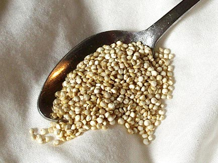
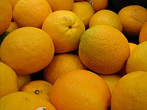
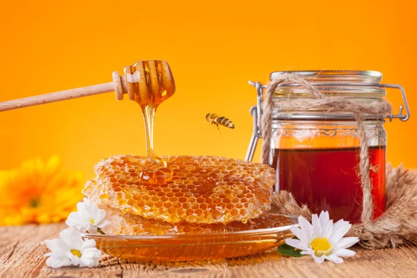
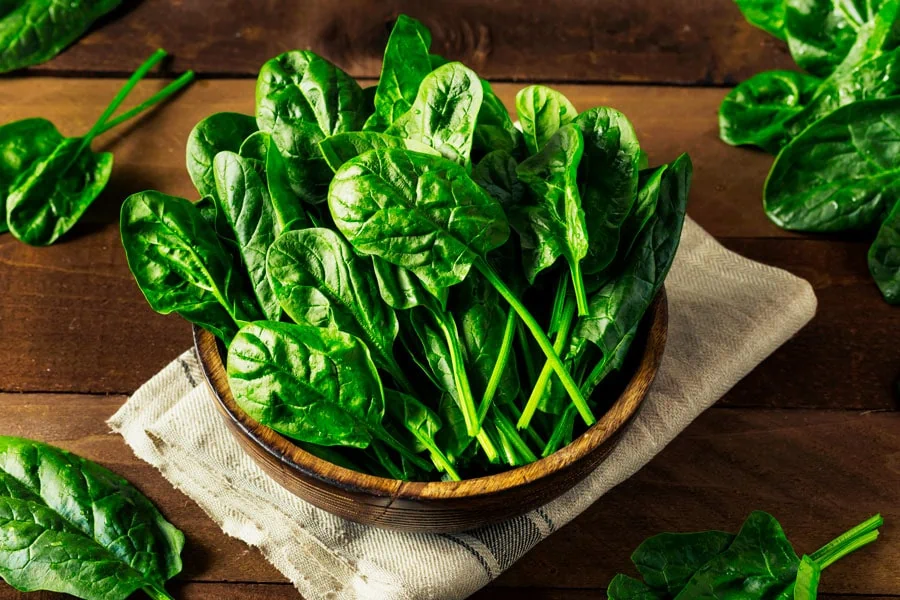
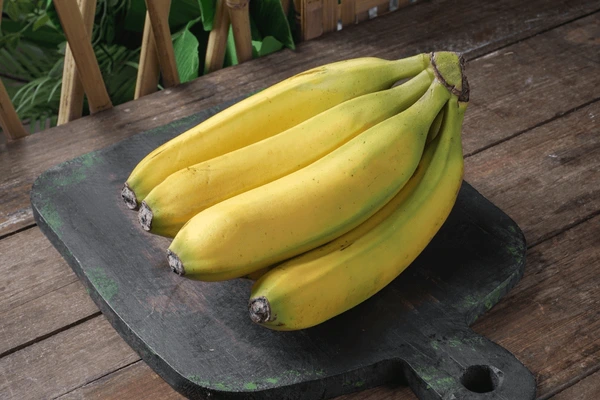
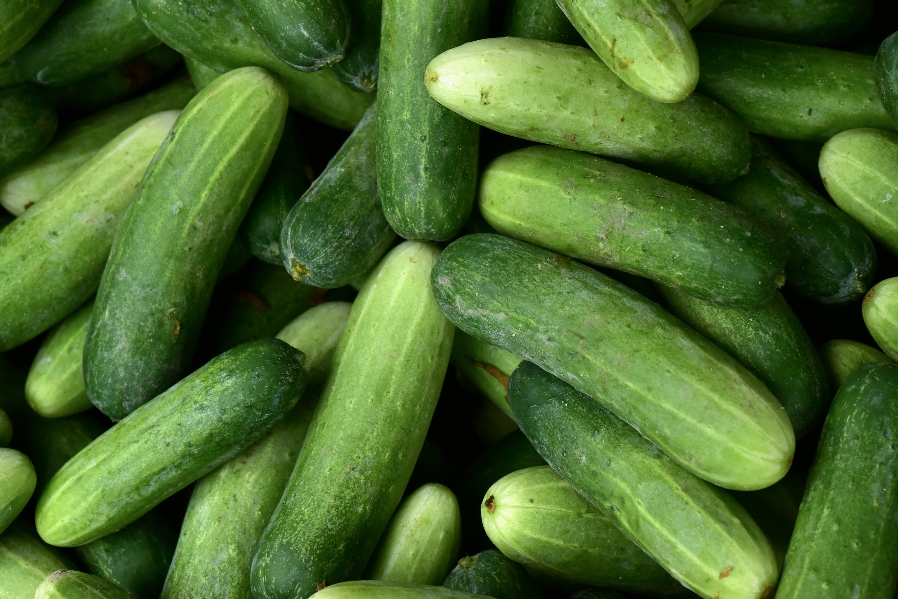
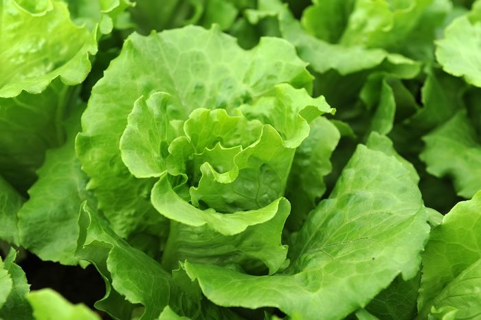

Bienvenido/a a tu mercado en línea, Aquí la frescura va directo del campo a tu hogar. Descubre la mejor selección de frutas y verduras, elegidas a mano, para que disfrutes del sabor más puro y natural. ¡Empieza a llenar tu canasta!
Bienvenido/a a tu mercado en línea, Aquí la frescura va directo del campo a tu hogar. Descubre la mejor selección de frutas y verduras, elegidas a mano, para que disfrutes del sabor más puro y natural. ¡Empieza a llenar tu canasta!

Leche Entera
Descripcion: Directa del campo a tu mesa, nuestra leche es pura y natural. Con una textura cremosa y un sabor inigualable, cada vaso te da la energía y los nutrientes que necesitas para empezar bien el día
$300 CLP

Quinoa
$5000
La quinoa posee un alto contenido en fibra y en proteínas, pero su índice glucémico es muy bajo, por este motivo, es una buena opción para aquellas personas que están a dieta, son diabéticas o quieren mantener el peso. Ayuda a mejorar el tránsito intestinal.

Zanahorias Organicas
$900 CLP
Descripción: Zanahorias crujientes cultivadas sin pesticidas en la Región de O'Higgins. Excelente fuente de vitamina A y fibra, ideales para ensaladas, jugos o como snack saludable.

Manzana fuji
$1200 CLP
Descripción: Manzanas Fuji crujientes y dulces, cultivadas en el Valle del Maule. Perfectas para meriendas saludables o como ingrediente en postres. Estas manzanas son conocidas por su textura firme y su sabor equilibrado entre dulce y ácido.

Naranjas Valencia
$1500 CLP
Descripción: Jugosas y ricas en vitamina C, estas naranjas Valencia son ideales para zumos frescos y refrescantes. Cultivadas en condiciones climáticas óptimas que aseguran su dulzura y jugosidad.

Miel Organica
$5000 CLP
Descripción: Miel pura y orgánica producida por apicultores locales. Rica en antioxidantes y con un sabor inigualable, perfecta para endulzar de manera natural tus comidas y bebidas.

Espinacas Frescas
$700 CLP
Descripción: Espinacas frescas y nutritivas, perfectas para ensaladas y batidos verdes. Estas espinacas son cultivadas bajo prácticas orgánicas que garantizan su calidad y valor nutricional.

Platanos Cavendish
$800 CLP
Descripcion: Plátanos maduros y dulces, perfectos para el desayuno o como snack energético. Estos plátanos son ricos en potasio y vitaminas, ideales para mantener una dieta equilibrada.

Pimientos Tricolores
Descripcion: "Perfecto para ensaladas, salteados y como ingrediente en una gran variedad de platos", "excelente para preparar conservas".

Pepinos Frescos
$750 CLP
Descripcion: Ofrece pepinos con una piel vibrante de color verde oscuro, sin manchas amarillas ni defectos. Al tacto, deben sentirse firmes y sin zonas blandas. Las puntas deben estar frescas y no resecas, lo cual es un signo de que el producto está en óptimas condiciones

Lechuga
Descripcion: crujiente, fresca y llena de vida. Cultivada con cuidado y cosechada en su punto óptimo, esta lechuga no es solo un ingrediente, es la base para una comida saludable y deliciosa.

Papas
Descripcion: Imagina la textura perfecta para tu puré cremoso, la base ideal para unas papas fritas doradas y crujientes, o la compañera perfecta para asar con tus carnes favoritas. Esta papa es más que un simple tubérculo; es la promesa de una comida reconfortante, deliciosa y adaptable a cualquier antojo. ¡Lista para transformar tu cocina!
Para más información, visitas Esta Pagina.
¿Donde nos ubicamos? Esta Pagina.